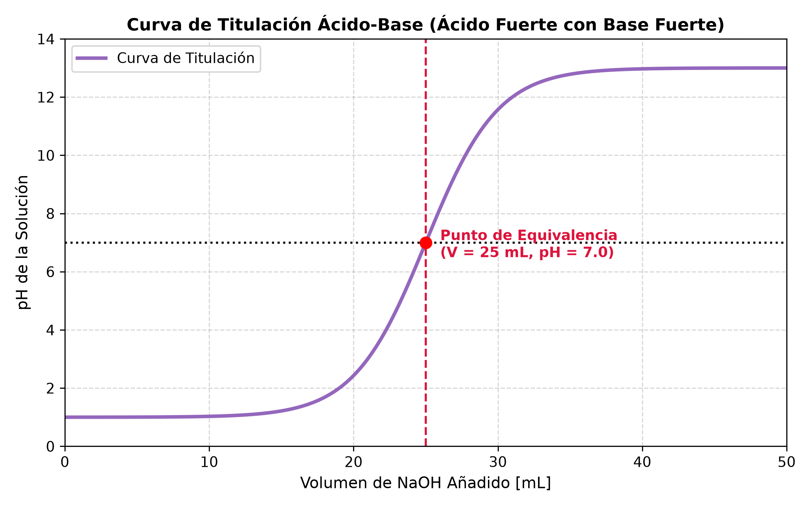
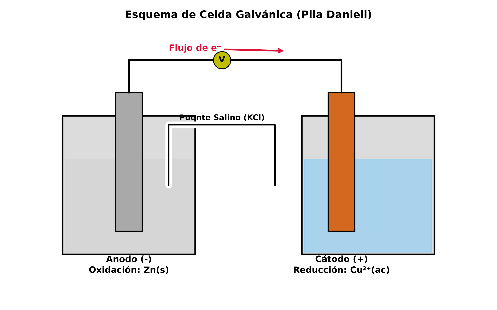

6.2 Equilibrio Ácido-Base y Electroquímica
1. Marco Teórico: Teorías Ácido-Base
Las reacciones ácido-base involucran la transferencia de protones o pares de electrones entre especies químicas.
A. Teoría de Arrhenius
- Ácido: Sustancia que en solución acuosa se disocia produciendo cationes hidrógeno (\(\text{H}^+\) o \(\text{H}_3\text{O}^+\)). $\(\text{HCl}(ac) \rightarrow \text{H}^+(ac) + \text{Cl}^-(ac)\)$
- Base: Sustancia que en solución acuosa se disocia produciendo aniones hidróxido (\(\text{OH}^-\)). $\(\text{NaOH}(ac) \rightarrow \text{Na}^+(ac) + \text{OH}^-(ac)\)$
B. Teoría de Brønsted-Lowry
- Ácido: Especie química capaz de donar un protón (\(\text{H}^+\)).
- Base: Especie química capaz de aceptar un protón (\(\text{H}^+\)).
Pares Conjugados Ácido-Base:
Cuando un ácido cede un protón, se convierte en su base conjugada. Cuando una base acepta un protón, se transforma en su ácido conjugado.
C. Sustancias Anfóteras
Son aquellas especies que pueden actuar como ácido o como base según el medio en el que se encuentren (ej. el agua, \(\text{H}_2\text{O}\), y el ion bicarbonato, \(\text{HCO}_3^-\)).
2. Autoprotólisis del Agua y Escala de pH
El agua pura sufre una autoionización en pequeña proporción:
A. Producto Iónico del Agua (\(K_w\))
A \(25^\circ\text{C}\), la constante de equilibrio de autoprotólisis es:
B. Escala de pH y pOH
El pH es una medida logarítmica de la concentración de cationes oxonio (hidronio):
Aplicando \(-\log\) a la expresión de \(K_w\):
3. Fuerza de Ácidos y Bases
A. Ácidos y Bases Fuertes
Se disocian/ionizan completamente en solución acuosa (\(\alpha \approx 1\)). No se establece un equilibrio químico. * Ácidos Fuertes Típicos: \(\text{HCl}\), \(\text{HNO}_3\), \(\text{H}_2\text{SO}_4\), \(\text{HClO}_4\). * Bases Fuertes Típicas: Hidróxidos de metales alcalinos y alcalinotérreos (\(\text{NaOH}\), \(\text{KOH}\), \(\text{Ca(OH)}_2\)).
B. Ácidos y Bases Débiles
Se ionizan parcialmente en agua, estableciendo un equilibrio químico caracterizado por sus constantes de acidez (\(K_a\)) o basicidad (\(K_b\)).
Ácido Débil Monoprótico (\(\text{HA}\)):
Base Débil (\(\text{B}\)):
Relación para un par conjugado: $\(K_a \cdot K_b = K_w = 1.0 \times 10^{-14}\)$

4. Reacciones Redox y Electroquímica
La Electroquímica estudia la interconversión entre la energía química y la energía eléctrica mediante reacciones de oxidación-reducción (redox).
A. Conceptos Fundamentales Redox
- Oxidación: Pérdida de electrones (aumento del número de oxidación).
- Reducción: Ganancia de electrones (disminución del número de oxidación).
- Agente Oxidante: Especie que se reduce (provoca la oxidación de otra).
- Agente Reductor: Especie que se oxida (provoca la reducción de otra).
5. Celdas Electroquímicas (Galvánicas o Voltáicas)
Una celda galvánica aprovecha una reacción redox espontánea (\(\Delta G < 0\)) para generar corriente eléctrica continua.

A. Componentes y Reglas de Funcionamiento
- Ánodo (Electrodo Negativo -): Ocurre la Oxidación. Genera electrones.
- Cátodo (Electrodo Positivo +): Ocurre la Reducción. Consume electrones.
- Puente Salino: Mantiene la neutralidad eléctrica del sistema permitiendo la migración de aniones hacia el ánodo y cationes hacia el cátodo.
B. Potencial Estándar de Celda (\(E^\circ_{\text{celda}}\))
El potencial estándar se mide en condiciones estándar (\(1 \text{ M}\), \(1 \text{ atm}\), \(25^\circ\text{C}\)):
- Si \(E^\circ_{\text{celda}} > 0\), la reacción redox es espontánea en condiciones estándar.
C. Ecuación de Nernst
Permite calcular el potencial de celda (\(E_{\text{celda}}\)) en condiciones no estándar:
A \(T = 298.15 \text{ K}\) (\(25^\circ\text{C}\)), expresada en logaritmo en base 10:
Donde: * \(n\): Número de moles de electrones transferidos en la ecuación balanceada. * \(F = 96485 \frac{\text{C}}{\text{mol e}^-}\): Constante de Faraday. * \(Q\): Cociente de reacción redox.
6. Ejercicios Resueltos del TP de Ácido-Base y Electroquímica
Ejercicio 1: Cálculo de pH de un Ácido Débil
Enunciado: Calcular el pH y el grado de disociación (\(\alpha\)) de una solución \(0.10 \text{ M}\) de ácido acético (\(\text{CH}_3\text{COOH}\)) a \(25^\circ\text{C}\) (\(K_a = 1.8 \times 10^{-5}\)).
Desarrollo Analítico:
- Tabla I.C.E. (Inicio, Cambio, Equilibrio):
| Especie | \(\text{CH}_3\text{COOH}(ac)\) | \(+\) | \(\text{H}_2\text{O}(l)\) | \(\rightleftharpoons\) | \(\text{CH}_3\text{COO}^-(ac)\) | \(+\) | \(\text{H}_3\text{O}^+(ac)\) |
|---|---|---|---|---|---|---|---|
| Inicio (M) | 0.10 | — | 0 | 0 | |||
| Cambio (M) | \(-x\) | — | \(+x\) | \(+x\) | |||
| Equilibrio (M) | \(0.10 - x\) | — | \(x\) | \(x\) |
-
Planteo de \(K_a\): $\(K_a = \frac{[\text{CH}_3\text{COO}^-][\text{H}_3\text{O}^+]}{[\text{CH}_3\text{COOH}]} = \frac{x^2}{0.10 - x} = 1.8 \times 10^{-5}\)$
-
Aproximación: Como \(C_0 / K_a = 0.10 / (1.8 \times 10^{-5}) > 500\), asumimos \(0.10 - x \approx 0.10\): $\(x^2 \approx 1.8 \times 10^{-5} \cdot 0.10 = 1.8 \times 10^{-6}\)$ $\(x = [\text{H}_3\text{O}^+] = \sqrt{1.8 \times 10^{-6}} \approx 1.342 \times 10^{-3} \text{ M}\)$
-
Cálculo de pH y Grado de Disociación (\(\alpha\)): $\(pH = -\log(1.342 \times 10^{-3}) \approx 2.87\)$ $\(\alpha = \frac{x}{C_0} = \frac{1.342 \times 10^{-3}}{0.10} = 0.0134 \quad (1.34\%)\)$
Ejercicio 2: Potencial de Celda y Espontaneidad
Enunciado: Para la pila galvanica construida con los pares \(\text{Zn}^{2+}/\text{Zn}\) (\(E^\circ = -0.76 \text{ V}\)) y \(\text{Cu}^{2+}/\text{Cu}\) (\(E^\circ = +0.34 \text{ V}\)):
a) Escribir las semirreacciones y la reacción global.
b) Calcular el potencial estándar de la celda (\(E^\circ_{\text{celda}}\)).
Desarrollo Analítico:
- Paso a): Identificación del Ánodo y Cátodo
- El electrodo con mayor potencial de reducción estándar se reduce (Cátodo: \(\text{Cu}^{2+}\)).
-
El electrodo con menor potencial se oxida (Ánodo: \(\text{Zn}\)).
-
Ánodo (Oxidación): \(\text{Zn}(s) \rightarrow \text{Zn}^{2+}(ac) + 2e^-\)
- Cátodo (Reducción): \(\text{Cu}^{2+}(ac) + 2e^- \rightarrow \text{Cu}(s)\)
-
Reacción Global: \(\text{Zn}(s) + \text{Cu}^{2+}(ac) \rightarrow \text{Zn}^{2+}(ac) + \text{Cu}(s)\)
-
Paso b): Cálculo de \(E^\circ_{\text{celda}}\) $\(E^\circ_{\text{celda}} = E^\circ_{\text{cátodo}} - E^\circ_{\text{ánodo}} = (+0.34 \text{ V}) - (-0.76 \text{ V}) = +1.10 \text{ V}\)$
7. Ejercicio Típico de Parcial Explicado Paso a Paso
Enunciado: Se arma una celda electroquímica con la siguiente configuración a \(25^\circ\text{C}\): $\(\text{Zn}(s) \mid \text{Zn}^{2+}(0.010 \text{ M}) \parallel \text{Cu}^{2+}(0.50 \text{ M}) \mid \text{Cu}(s)\)$ Sabiendo que \(E^\circ(\text{Zn}^{2+}/\text{Zn}) = -0.76 \text{ V}\) y \(E^\circ(\text{Cu}^{2+}/\text{Cu}) = +0.34 \text{ V}\), calcule la fuerza electromotriz real (\(E_{\text{celda}}\)) de la pila.
Resolución Explicada para Examen:
-
Paso 1: Determinar \(E^\circ_{\text{celda}}\) y la cantidad de electrones \(n\) $\(E^\circ_{\text{celda}} = E^\circ_{\text{cátodo}} - E^\circ_{\text{ánodo}} = 0.34 \text{ V} - (-0.76 \text{ V}) = 1.10 \text{ V}\)$ Reacción global: \(\text{Zn}(s) + \text{Cu}^{2+}(ac) \rightleftharpoons \text{Zn}^{2+}(ac) + \text{Cu}(s) \implies n = 2 \text{ moles de } e^-\)
-
Paso 2: Formular el Cociente de Reacción (\(Q\)) Los sólidos puros (\(\text{Zn}(s)\) y \(\text{Cu}(s)\)) tienen actividad igual a 1: $\(Q = \frac{[\text{Zn}^{2+}]}{[\text{Cu}^{2+}]} = \frac{0.010 \text{ M}}{0.50 \text{ M}} = 0.020\)$
-
Paso 3: Aplicar la Ecuación de Nernst $\(E_{\text{celda}} = E^\circ_{\text{celda}} - \frac{0.0592}{n} \log Q\)$ $\(E_{\text{celda}} = 1.10 \text{ V} - \frac{0.0592}{2} \log(0.020)\)$ $\(E_{\text{celda}} = 1.10 - (0.0296) \cdot (-1.6990)\)$ $\(E_{\text{celda}} = 1.10 + 0.0503 = 1.1503 \text{ V} \approx 1.15 \text{ V}\)$
graph TD
A[Inicio: Estudio de Reacciones en Disolución Acuosa] --> B[Equilibrio Ácido-Base]
A --> C[Reacciones Redox y Electroquímica]
B --> D[Teorías: Arrhenius, Brønsted-Lowry, Lewis]
B --> E[Autoprotólisis del Agua: Kw = 10^-14]
E --> F[Escala de pH: pH + pOH = 14]
B --> G[Fuerza Relativa: Ácidos y Bases Débiles Ka / Kb]
C --> H[Número de Oxidación y Balanceo Ion-Electrón]
C --> I[Celdas Galvánicas / Voltáicas]
I --> J[Ánodo - Oxidación vs Cátodo + Reducción]
I --> K[Potencial Estándar E°celda = E°cátodo - E°ánodo]
K --> L[Ecuación de Nernst: Ajuste de Potencial por Concentración]
graph TD
A[Inicio: Estudio de Reacciones en Disolución Acuosa] --> B[Equilibrio Ácido-Base]
A --> C[Reacciones Redox y Electroquímica]
B --> D[Teorías: Arrhenius, Brønsted-Lowry, Lewis]
B --> E[Autoprotólisis del Agua: Kw = 10^-14]
E --> F[Escala de pH: pH + pOH = 14]
B --> G[Fuerza Relativa: Ácidos y Bases Débiles Ka / Kb]
C --> H[Número de Oxidación y Balanceo Ion-Electrón]
C --> I[Celdas Galvánicas / Voltáicas]
I --> J[Ánodo - Oxidación vs Cátodo + Reducción]
I --> K[Potencial Estándar E°celda = E°cátodo - E°ánodo]
K --> L[Ecuación de Nernst: Ajuste de Potencial por Concentración]